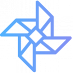
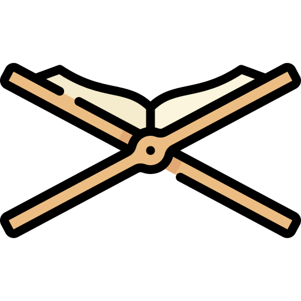
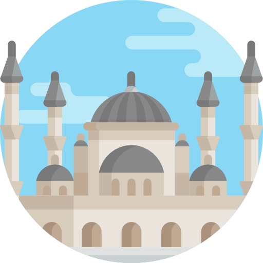

IDN Teman Kami
SMP-SMK IDN menjadi favorit dengan lulusan yang terbukti di atas standar atau bisa dikatakan expert. Terlebih dengan support kegiatan dan tim pengajar yang berpengalaman.
Tumbuh
Peserta didik dibimbing untuk tumbuh dan berkembang.
Expert
Setelah lulus, siswa akan menjadi expert di bidangnya.
Bermanfaat
Siswa dapat memberikan manfaat bagi banyak orang di bidang IT dan agama.

Karya
Setiap peserta didik menghasilkan karya nyata selama proses belajar.
Mimpi Besar
Peserta didik dibekali mental untuk memiliki mimpi besar.
Upgrade your skill, Upgrade your life

Programming
Belajar bahasa pemrograman bersama mentor ahli, dan dapatkan sertifikasi nasional atau internasional.

Networking
Siswa mendalami bidang networking seperti Mikrotik, Cisco, dan Ubiquity.
Internet of Things
Belajar Internet of Things secara mendalam dengan bimbingan guru ahli.

Tahfidz
Program tahfidz rutin dilakukan setiap hari. Selain jago IT, siswa juga paham dan pintar mengaji.
English
Siswa dilatih berbicara dalam bahasa Inggris sehingga lancar dan aktif saat lulus.

Religion
Kurikulum agama yang mendalam membekali siswa dengan ilmu dan akhlakul karimah.